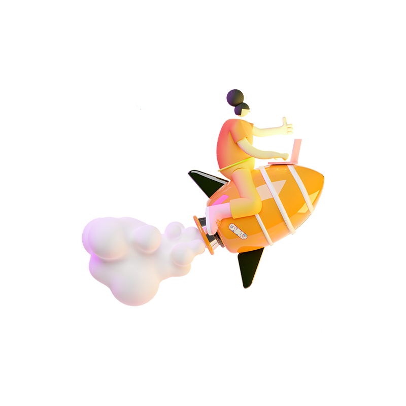

Granja de Servidores
Una granja de servidores es un grupo de servidores que se mantienen en una única localización. Todos estos servidores están conectados de forma conjunta, haciendo que puedan realizar cosas que pueden resultar difíciles o imposibles de hacer por un solo servidor.
